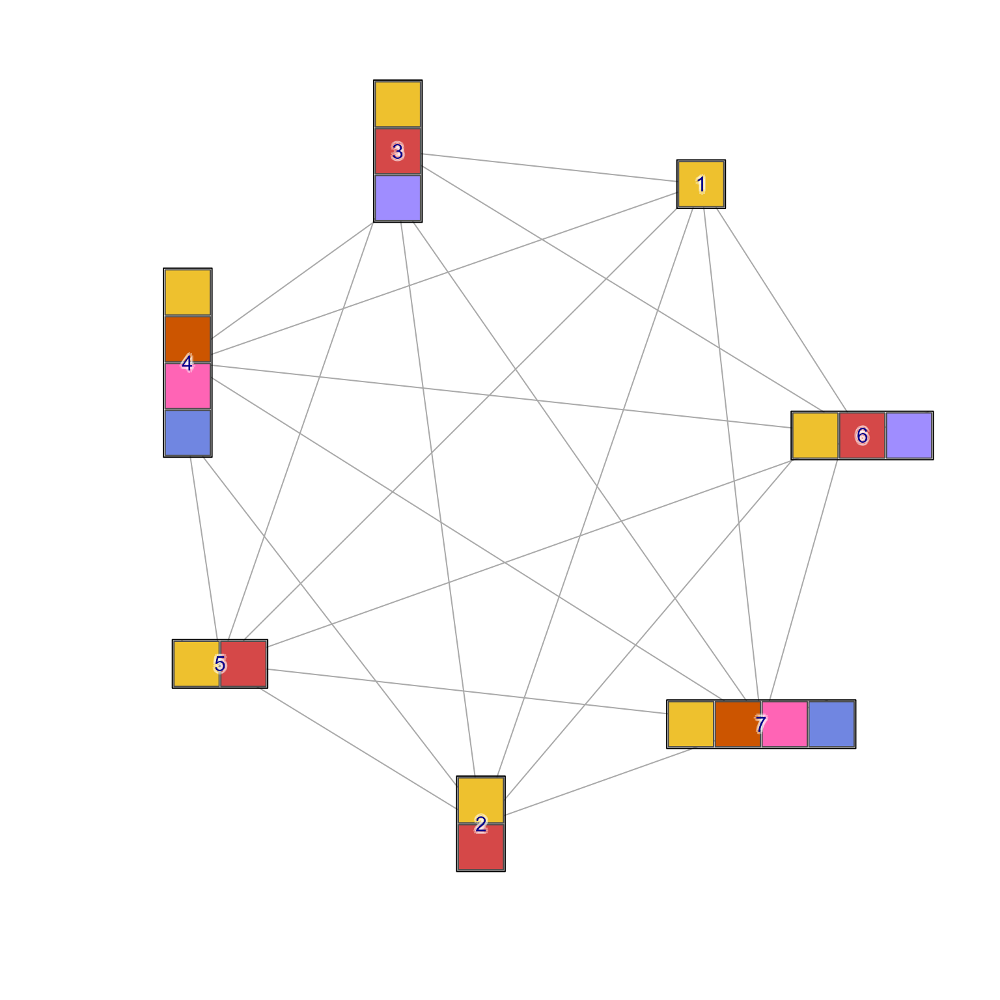

Remove igraph blank wedges
removeIgraphBlanks( g, blankColor = c("#FFFFFF", "#FFFFFFFF", "transparent"), c_max = 7, l_min = 95, alpha_max = 0.1, constrain = c("nrow", "ncol", "none"), resizeNodes = TRUE, applyToPie = TRUE, pie_to_circle = TRUE, pieAttrs = c("pie", "pie.value", "pie.names", "pie.color"), verbose = FALSE, ... )
Arguments
| g | igraph object containing one or more attributes from
|
|---|---|
| blankColor | character vector of R colors directly matched to
the input |
| c_max | maximum chroma as determined by HCL color space, in range of no color 0 to maximum color 100. |
| l_min | numeric minimum luminance required for a color to be
considered blank, combined with the |
| alpha_max | numeric value indicating the alpha transparency below which a color is considered blank, in range of fully transparent 0, to fully non-transparent 1. |
| constrain | character value indicating for node shape
|
| resizeNodes | logical indicating whether to resize the resulting nodes to maintain roughly proportional size to the number of colored wedges. |
| applyToPie | logical indicating whether to apply the logic to
nodes with shape |
| pie_to_circle | logical indicating whether node shapes for
single-color nodes should be changed from |
| pieAttrs | character vector of |
| verbose | logical indicating whether to print verbose output. |
| ... | additional arguments are passed to |
Details
This function is intended to affect nodes with shapes "pie" or
"coloredrectangle", and evaluates the vertex attributes
"coloredrect.color" and "pie.color". For each node, any colors
considered blank are removed, along with corresponding values in
related vertex attributes, including "pie","pie.value","pie.names",
"coloredrect.names","coloredrect.nrow","coloredrect.ncol","coloredrect.byrow".
This function calls isColorBlank() to determine which colors are
blank.
This function is originally intended to follow igraph2pieGraph() which
assigns colors to pie and coloredrectangle attributes, where missing
values or values of zero are often given a "blank" color. To enhance the
resulting node coloration, these blank colors can be removed in order to
make the remaining colors more visibly distinct.
See also
Other jam igraph functions:
cnet2df(),
cnet2im(),
cnetplotJam(),
cnetplot_internalJam(),
color_edges_by_nodes_deprecated(),
color_edges_by_nodes(),
drawEllipse(),
edge_bundle_bipartite(),
edge_bundle_nodegroups(),
enrichMapJam(),
fixSetLabels(),
get_bipartite_nodeset(),
igraph2pieGraph(),
jam_igraph(),
jam_plot_igraph(),
layout_with_qfrf(),
layout_with_qfr(),
memIM2cnet(),
mem_multienrichplot(),
rectifyPiegraph(),
relayout_with_qfr(),
removeIgraphSinglets(),
reorderIgraphNodes(),
rotate_igraph_layout(),
spread_igraph_labels(),
subgraph_jam(),
subsetCnetIgraph(),
subset_igraph_components(),
with_qfr()
Examples
library(igraph); library(multienrichjam); g <- graph.full(n=3); V(g)$name <- c("nodeA", "nodeB", "nodeC"); V(g)$shape <- "coloredrectangle"; V(g)$coloredrect.names <- split( rep(c("up","no", "dn"), 7), rep(V(g)$name, c(2,3,2)*3)); V(g)$coloredrect.byrow <- FALSE; V(g)$coloredrect.nrow <- rep(3, 3); V(g)$coloredrect.ncol <- c(2,3,2); V(g)$label.degree <- pi*3/2; V(g)$label.dist <- 3; V(g)$size2 <- c(20,30,20); color_v <- rep("white", 21); color_v[c(1,3,7,9,15,19,20,21)] <- colorjam::rainbowJam(5);#> Warning: number of items to replace is not a multiple of replacement lengthV(g)$coloredrect.color <- split( color_v, rep(V(g)$name, c(2,3,2)*3)); par("mfrow"=c(2,2)); lg <- layout_nicely(g); plot(g, layout=lg); g2 <- removeIgraphBlanks(g, constrain="none");#> Warning: coercing argument of type 'list' to logicalV(g2)$size2 <- V(g2)$size2 / 3; plot(g2, layout=lg, main="constrain='none'"); g3 <- removeIgraphBlanks(g, constrain="nrow");#> Warning: coercing argument of type 'list' to logical#> Warning: coercing argument of type 'list' to logical# g7 <- graph.full(n=7); V(g7)$coloredrect.color <- lapply(c(1,2,3,4,2,3,4), function(i){colorjam::rainbowJam(i)}); V(g7)$coloredrect.ncol <- c(1,1,1,1,2,3,4); V(g7)$coloredrect.nrow <- c(1,2,3,4,1,1,1); V(g7)$coloredrect.names <- V(g7)$coloredrect.color; V(g7)$shape <- "coloredrectangle"; V(g7)$size <- 10; V(g7)$size2 <- V(g7)$coloredrect.ncol * 10; lg7 <- layout_nicely(g7); par("mfrow"=c(2,2)); plot(g7, layout=lg7, vertez.size2=10); plot(g7, layout=lg7, vertex.size2=V(g7)$coloredrect.ncol*10); plot(g7, layout=lg7, vertex.size2=V(g7)$coloredrect.nrow*10);